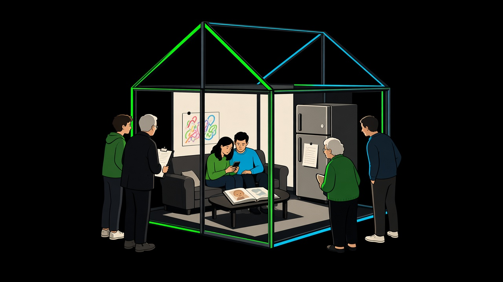
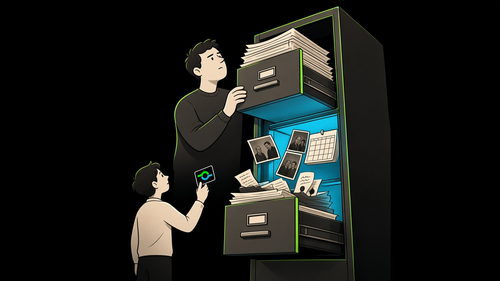
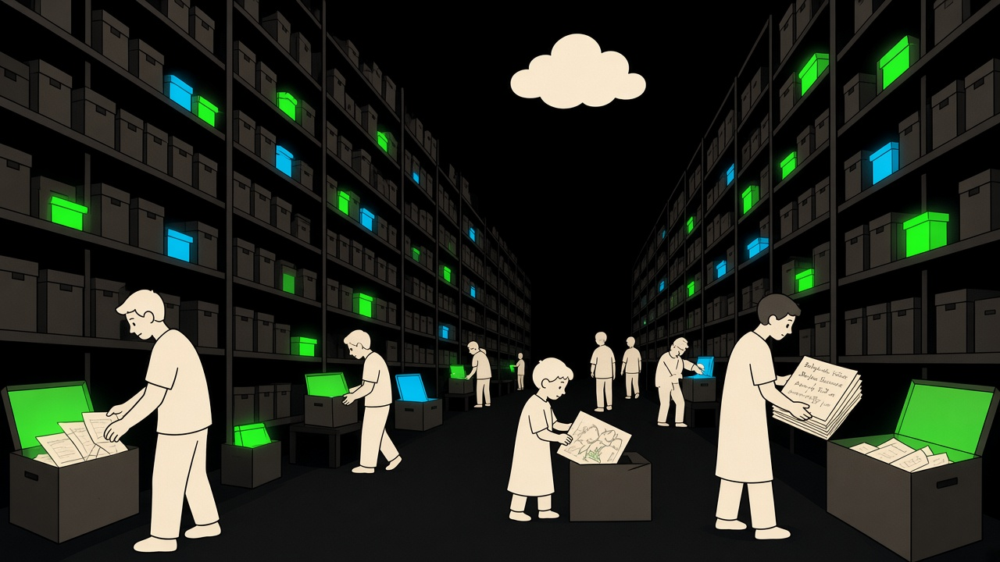
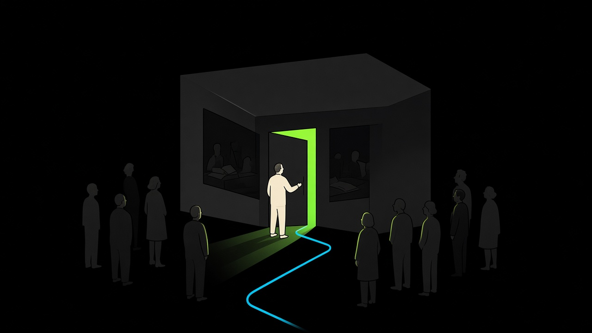

A plain case for home data
We are storing our lives in the wrong place.
Most of your personal data is not in your house. It is distributed around the world on computers owned by companies you have an account with. You have a login. They have the copy.
It is a little like living in a house with glass walls. The photo album on the coffee table, the list on the fridge, the drawing your kid made last week — all of it sits where people you have never met can walk up and look. Nobody has to break in.

What is actually happening
When you add something to a grocery list, upload a photo, or send a message through a popular app, that information is copied to a data center. The company runs the software. The company holds the copy. You get access through an account.
This is the default design of modern software. Build the app in the cloud. Store the data in the cloud. Charge for the service, sell ads, or both.
For a while, this was convenient. You did not have to maintain a server. Your phone synced automatically. Your family could share a calendar without anyone becoming an IT department.
The convenience was real. So was the trade. You were handed a key card. They kept the filing cabinet — and they can open any drawer they like.

Why the current direction fails
When your data lives on someone else's computers, your access is conditional. They can change the terms. They can raise the price. They can shut the product down. They can lock you out of an account because their automated system flagged something.
You do not need to believe anyone means harm for this to be a problem. You only need to notice that your household does not hold a copy of its own history. The photos from your child's first year. The messages with a parent who has passed. The list your partner edited last Tuesday. They exist as entries in someone else's database.
We call that place the cloud, which makes it sound like weather. It is a building. Your boxes sit on its shelves, next to millions of other families' boxes, and the people who work there walk the aisles.

That is a fragile way to live in a digital world. Fragile for families. Fragile for communities. Fragile for anyone who expects their records to outlast a product roadmap.
What we need instead
We need to collect our own data at our own homes.
Not as a political statement. Not as nostalgia for the 1990s. As infrastructure — the same way we expect running water, electricity, a roof that keeps rain out, and walls nobody can see through. Your personal data should have a physical home that you control. A computer in your house, or your office, where the default copy lives.
Sharing should work like a front door. You invite someone in. They get access to what you chose. Everyone else stays outside. The internet helps people reach the door. It should not be the vault where your life is kept.

This is not about refusing the cloud entirely. Coordination still matters. Accounts still matter. Discovery still matters. But the center of gravity moves. Your home holds the data. The cloud helps people find each other and connect.
Where to start
A small number of people are building toward this. Portico Works is one of them — software that lets you start in the cloud today and move your data home when you are ready, without throwing away sharing or asking your family to become administrators.
We are not asking you to trust a slogan. We are asking you to look at where your data lives today — whose building, whose shelves, whose walls — and decide if that is where you want it in ten years.